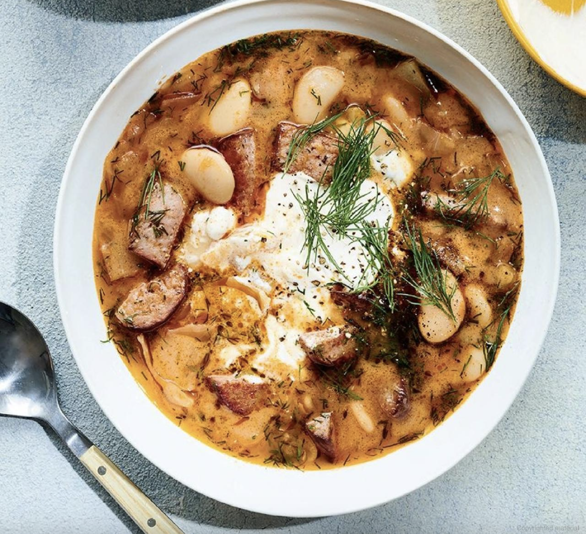

Kielbasa and Cabbage Soup

Description
In the words of original author: "Kielbasa is perfectly suited to soup because of the complexity of flavour it
lends as it simmers", but subbing in an equivalent italian/veggie sausage works fine too.
The recipe is from Cook This Book by Molly Baz
Ingredients
- 2 celery stalks
- 6 garlic cloves
- 1 large yellow onion
- 1 pound green or napa cabbage
- 1 cup fresh dill leaves
- 12 ounces kielbasa
- ¼ cup olive oil
- 2 tsps salt and Freshly Ground Black Pepper
- 3 tbsp tomato paste
- 2 cans white beans
- 4 cups water
- Sour Cream for serving (or whole-milk plain Greek Yogurt)
Steps
- Mise-en-place: thinly slice the garlic; cut up the onion; cut the celery into ¼ inch-thick half-moons;
reduce the cabbage to quarters, cut out the core, and cut the leaves into 1” wide strips; split the kielbasa
in half lengthwise, and cut each half into ½” wide half-moons.
- Build the Base: Heat the oil in a large pot or Dutch oven over medium high heat. Add the kielbasa, and cook
without moving for 4-5 minutes, to build a golden-brown crust and fond. Stir, and cook another 2-3 minutes.
Add in the garlic, celery, and onion, and cook, lowering to medium heat, until onion is translucent, about 5
minutes. Add in the cabbage, salt, and A LOT of black pepper, tossing to coat cabbage in oil, and stirring
often, until cabbage has softened, roughly another 5 minutes. Stir in tomato paste, and cook off for 2-3
minutes.
- Add in beans and water, stirring to incorporate, and intentionally smashing around 1/3rd cup of the beans
against the sides of the pot, so their released starch can thicken the soup. Return heat to medium-high, and
bring to a simmer. Reduce the heat, and simmer 15 minute, until thickened.
- Season with additional salt and pepper to taste. Ladle into bowls, and top with a dollop of sour cream,
additional black pepper, and a drizzle of olive oil.